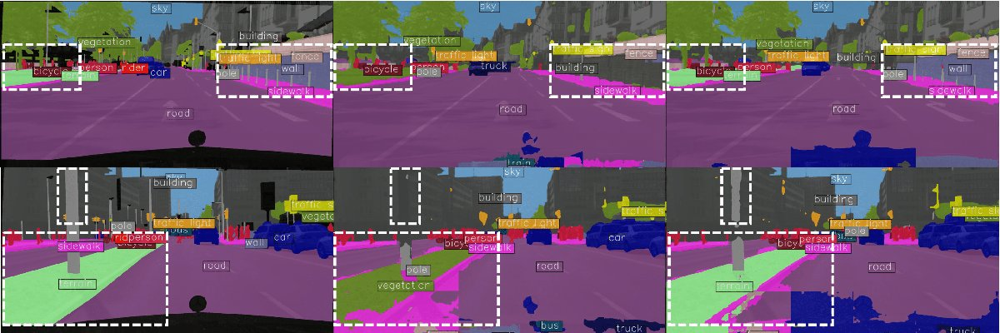

Lost in Translation? Vocabulary Alignment for Source-Free Adaptation in Open-Vocabulary Semantic Segmentation
BMVC 2025 British Machine Vision Conference
VocAlign adapts open-vocabulary segmentation models to new domains without any source data. A student–teacher setup with vocabulary alignment and LoRA fine-tuning gains +6.11 mIoU on Cityscapes.
@inproceedings{Mazzucco_2025_BMVC,
author = {Silvio Mazzucco and Carl Persson and Mattia Segu and Pier Luigi Dovesi
and Federico Tombari and Luc Van Gool and Matteo Poggi},
title = {Lost in Translation? Vocabulary Alignment for Source-Free Adaptation
in Open-Vocabulary Semantic Segmentation},
booktitle = {36th British Machine Vision Conference 2025, {BMVC} 2025,
Sheffield, UK, November 24-27, 2025},
publisher = {BMVA},
year = {2025}
}